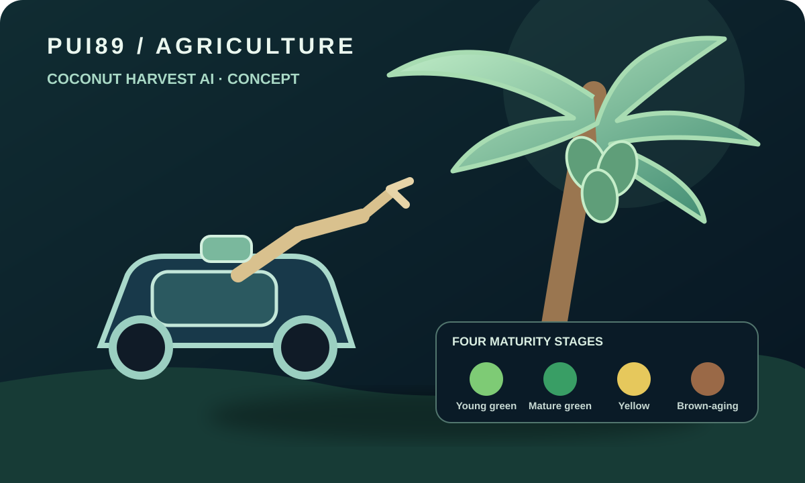

Harvest timing
Maturity, cultivar, lighting, occlusion and orchard conditions complicate consistent assessment.
A developing AI application for coconut maturity assessment, alongside a proposed harvesting-robot concept focused on safer, evidence-informed orchard workflows.

Software foundations and evaluation tools are in development. The maturity taxonomy is a working design. No validated detector accuracy, field harvesting, robotic reach or physical safety performance is claimed.
Maturity, cultivar, lighting, occlusion and orchard conditions complicate consistent assessment.
Tall palms and manual harvesting can create access and falling-object risks that need careful engineering.
Growers need understandable recommendations, uncertainty and a record of why an observation was flagged.
Image intake → quality and provenance checks → future maturity estimation → uncertainty and human review → evidence record. Four working maturity categories: young, mature green, yellow and brown-aging. These are proposed labels; classification boundaries require agronomic review and measured validation.
A proposed harvesting arm would approach, grip and cut a selected coconut bunch. The collection method is configurable: use an optional removable basket to capture the bunch, or use a controlled drop-after-cut approach where a separately assessed clear landing zone and exclusion area make it appropriate. The arm, cutter, basket, lowering/drop control and safety interlocks are design proposals, not built or validated hardware.
This project is still in development. It is not a finished product.
Qualified specialists must identify applicable standards, laws and site requirements. Mentioning a standard does not mean PUI89 is certified or compliant.
Growers, agricultural researchers, computer-vision engineers and robotics specialists can help review requirements, data quality and safe test milestones.
Discuss support or collaborationOpen project repository ↗Scan to open this exact English project page. The QR code is a static image hosted by PUI89; it does not use a redirect or paid QR service.
Project-specific capabilities built on the PUI89 Shared AI Core.
Real licensed orchard imagery, robust occlusion handling, calibrated confidence, low-memory CPU inference and field evaluation against human labels.
Evidence status: Proposed product scope, not a claim that every capability is implemented. Report code, software tests, dataset evaluation and real-world validation separately.
Uses the shared PUI89 PTI framework, with modules selected for each project's actual problem
Coconut maturity and harvest readiness
Image-quality checks; fruit and bunch detection; four maturity classes (young green, mature green, yellow and brown); segmentation and localisation; tracking across views where reliable; occlusion and distance uncertainty.
Assess maturity evidence and harvest context; propose a reviewable harvest-priority record. No autonomous cutting or harvesting is implied.
Every output must identify source, timestamp, model version, confidence and limitations. Unintegrated sensors or models must not be presented as operational.
Last reviewed: 8 November 2026 · Review period: November 2026
Seven practical dimensions guide the quality and maturity of this project. The coloured markers identify the review dimensions; they do not represent a certification or a claim that every recommendation has been implemented.
Status: ● Framework guidance published · ● Project-specific implementation evidence requires review · ● Unverified items remain unassessed.
These are improvement recommendations, not completed product capabilities. Project maturity must be advanced only when supported by repository evidence, reproducible tests or appropriately controlled validation.
PUI89 ENGINEERING STATUS
Development stage: Formal stage assessment pending. No maturity score or completion percentage is claimed.
These indicators are intentionally unscored until a dated review links each assessment to verifiable repository evidence, reproducible tests and applicable validation. A coloured marker identifies the dimension; it does not represent a score.
PUI89 EVIDENCE STANDARD
Coconut Harvest AI — Not yet scored
Completed evidence-backed strength reviews: 0. This is a review-record count, not a statement that no development or testing has occurred.
Assessment weights: Technical capability 25 · Testing and evidence 25 · Safety and reliability 20 · Engineering maturity 15 · Documentation and reproducibility 10 · Real-world validation 5.
Scores will appear only after a dated review records its scope, version, evidence, findings, limitations and next actions. Concepts, planned features and unrun tests receive no credit. Simulation results do not prove physical-world performance.